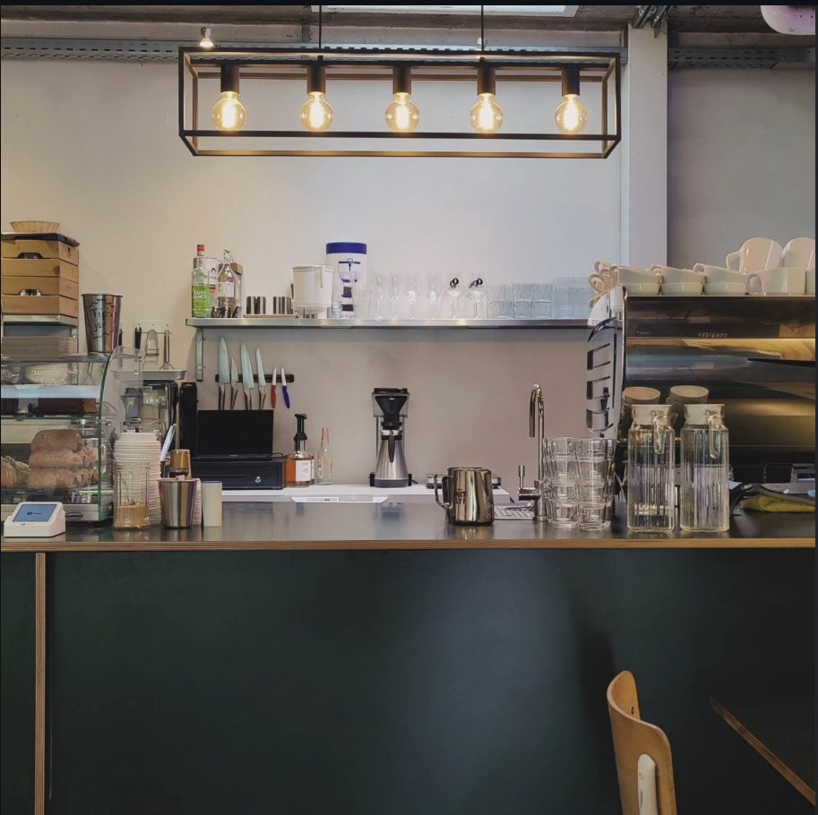
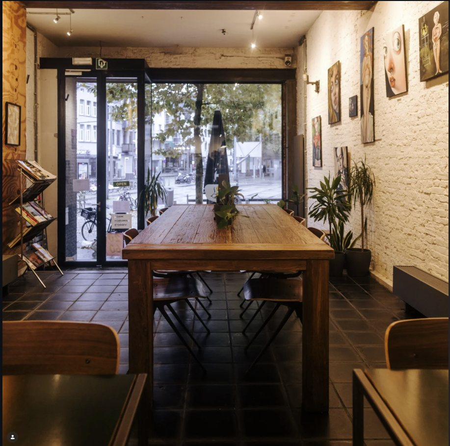
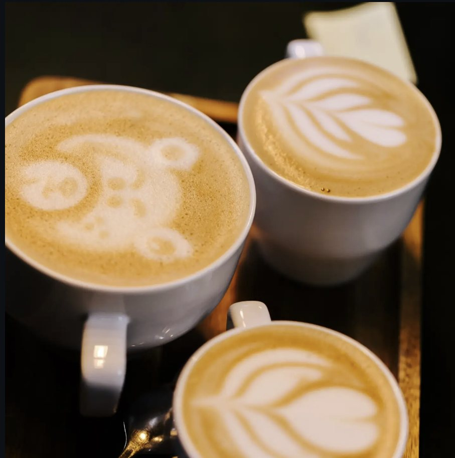
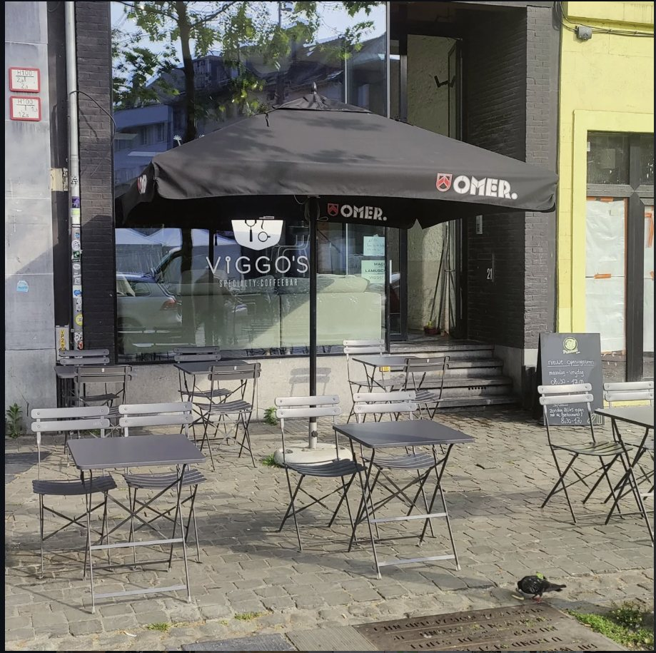
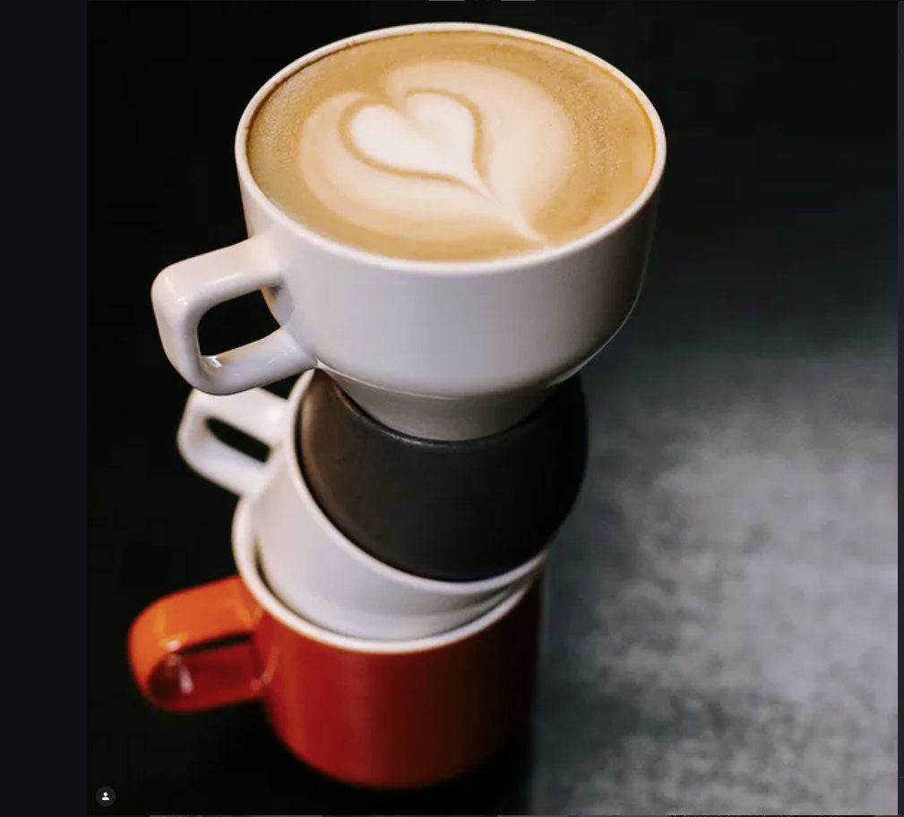

Specialty beans
We only pour coffee we'd happily drink every day, and we change it up through the year.

Espresso, filter and latte art on De Coninckplein.
Good coffee, a long wooden table, and a few Star Wars helmets keeping watch behind the bar.
Viggo's opened on De Coninckplein in 2012 as a specialty coffee bar. It has been a daily stop for the neighbourhood ever since: a quick espresso on the way to work, lunch at the big table, or a slow Sunday latte on the terrace.
And yes, take a good look at the espresso machine. It has company.

The first espressos go out to people on their way to work, Monday to Friday.
On Sundays we open a little later, for slow mornings and long breakfasts.
Midday is when the big table fills up. Grab a seat by the window.
A flat white and a croissant to get you through the rest of the day.
Doors close at five. See you tomorrow.
We only pour coffee we'd happily drink every day, and we change it up through the year.
Every drink is made by hand, one at a time, with milk steamed just for your cup.
A long table, big windows and a terrace on De Coninckplein. Stay as long as you like.




